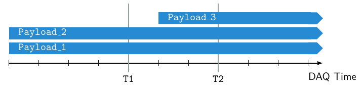
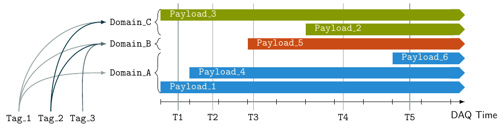

<h1>CDB Client</h1> <div style="width: 110%; font-size: 0.9em;"> - Latest release available at https://github.com/BNLNPPS/xpload/releases/tag/v0.5.0 - A CLI tool is included and installs along with the library <div style="width: 110%;"> ```shell $ git clone https://github.com/BNLNPPS/xpload.git $ cmake -S xpload -B build -DCMAKE_INSTALL_PREFIX=path/where/to/install $ cmake --build build $ cmake --install build ``` </div> - Everything installs and works out of the box on sPHENIX SDCC nodes - C++ example and tests are provided - Three different configurations with DB connections provided: [`dev`, `test`, and `prod`](https://github.com/BNLNPPS/xpload/tree/main/config) - Currently `test` is the default <div style="width: 110%; font-size: 0.8em;"> ```shell $ cat config/test.json { "host": "npdb-test.apps.sdcc.bnl.gov", "port": "80", "apiroot": "/api/cdb_rest", "path": "/cvmfs/sphenix.sdcc.bnl.gov/gcc-8.3/opt/sphenix/core/calibrations/DBTest/" } ``` </div> - Latest image is created with GitHub Actions on every push/PR; Or can be built locally: <div style="width: 110%; font-size: 0.8em;"> ```shell docker build -t ghcr.io/bnlnpps/xpload:latest . ``` </div> </div>
<h1>CDB Server</h1> - The Django web app is available from https://github.com/BNLNPPS/NPDB - The plan is to provide images with GH Actions for deployment in OKD - Thanks to Paul and Ruslan for accepting my PRs - To ensure stability for sPHENIX users, currently the image for tests comes from my fork - A PR with an openshift OKD template is pending [PR #11](https://github.com/BNLNPPS/NPDB/pull/11) - This template will allow us to deploy various instances of the web app (e.g. `prod`, `test`) with a single command: <div style="width: 110%; font-size: 1em;"> ```shell oc create -f npdb_openshift_template.yaml # (once) oc new-app --template=npdb ``` </div>
<h1>Command Line Interface</h1> - Top level actions <pre style="width: 100%;font-size: 0.8em; border: 1;"> $ xpl -h usage: xpl [-h] [-c CONFIG] {show,push,fetch} ... Manipulate payload entries positional arguments: {show,push,fetch} Choose one of the actions show Show entries push Insert an entry fetch Fetch entries optional arguments: -h, --help show this help message and exit -c CONFIG, --config CONFIG Config file with database connection parameters </pre>
<h1>CLI: Adding Entries</h1> - Adding payload entries <pre style="width: 100%;font-size: 0.8em; border: 1;"> $ xpl push -h usage: xpl push [-h] [-s START] tag domain payload positional arguments: tag Tag for the payload file domain Domain of the payload file payload Payload file name optional arguments: -s START, --start START Start of the interval when the payload is applied </pre> - If `tag/domain/payload` does not exist a new entry is created. Existing entries reused - Example with real files <pre style="width: 100%;font-size: 0.8em; border: 0;"> $ xpl push example_tag_1 Beam D0DXMagnets.dat $ xpl push example_tag_1 MagField sphenix3dbigmapxyz.root $ xpl push example_tag_1 ZDC towerMap_ZDC.txt $ xpl push example_tag_1 <span class="my-bg-red">CEMC</span> cemc_geoparams-0-0-4294967295-1536789215.xml $ xpl push example_tag_1 <span class="my-bg-red">CEMC</span> CEMCprof_Thresh30MeV.root </pre>
<h1>CLI: Selecting Entries</h1> <div style="font-size: 95%;"> - Only the first payload is returned from a given "subsystem" list <pre style="width: 100%;font-size: 0.8em; border: 0;"> $ xpl fetch example_tag_1 Found paths: /path/to/payload/data/D0DXMagnets.dat /path/to/payload/data/sphenix3dbigmapxyz.root /path/to/payload/data/towerMap_ZDC.txt /path/to/payload/data/cemc_geoparams-0-0-4294967295-1536789215.xml </pre> <pre style="width: 100%;font-size: 0.8em; border: 0;"> $ xpl fetch example_tag_1 CEMC Found paths: /path/to/payload/data/cemc_geoparams-0-0-4294967295-1536789215.xml </pre> <div class="hcenter"> <p></p> </div> - `T1` selects `[Payload_1]`, `T2` selects `[Payload_3]` <div style="font-size: 0.8em;"> - **Note**: Conceptually payload lists are for a specific "callibration" type rather than a "subsystem"... </div> </div>
<h1>Payload Validity Intervals</h1> <div class="hcenter"> <p></p> </div> <div style="font-size: 80%;"> - `Tag` defines a list of payload lists, a single reference to be used by reco/simu jobs and humans - `Domain` is used to group related payloads, e.g. relevant to a specific "calibration" type - `Timestamp T` further constrains the list of payloads for selecting the one relevant to the job - `Payload` defines the actual file on the filesystem (a BLOB) and the interval when it can be applied - **Note**: Payloads can be added later to payload lists but it will override the existing one only if its start time is later - In the above example `T4` or `T5` will not select `Payload_3` added after `Payload_2` - This is different from STAR where the latest entry is selected unless another payload (revision) is specified </div>